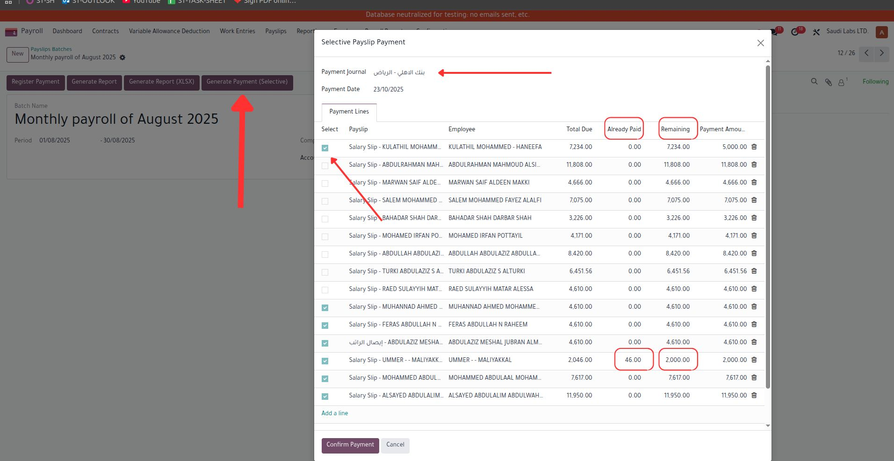
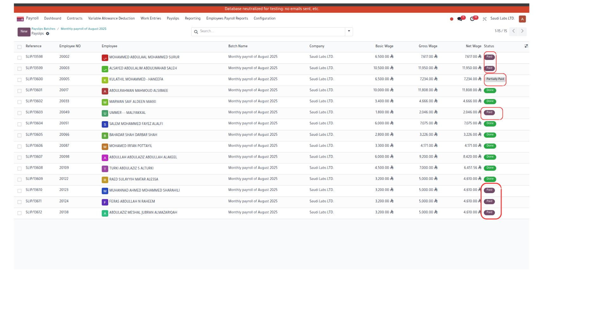
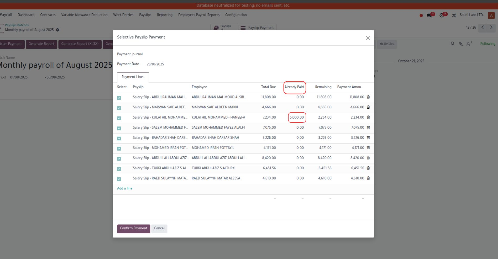
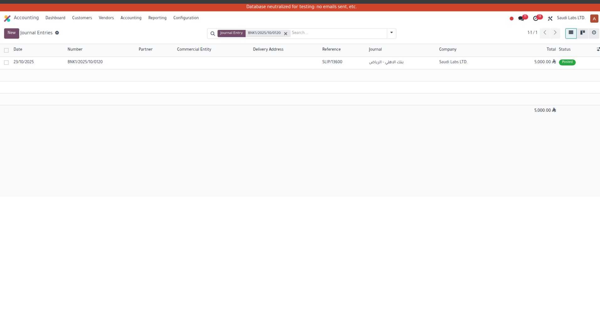

Selective Payslip Payment (Partial / Full)
Make full or partial payslip payments directly from the batch
Key Features
- ✅ Select specific payslips to pay
- ✅ Supports full and partial payments
- ✅ Automatically records journal entries
- ✅ Updates payslip state: Partially Paid / Paid
- ✅ Works with any bank or cash journal
Screenshots



